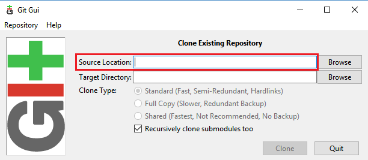
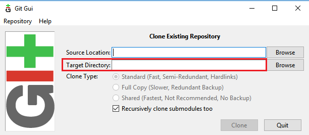

Adicionando seu Projeto
Com o repositorio configurarado, agora sim podemos enviar seus arquivos para todo o mundo ver o que você fez. Para isso você deve clicar em: Clone for Download, e em seguida no ícone circulado em vermelho.


Depois desses procedimento você já deve ter instalado em seu computador o Git (link para download) então deverá seguir os seguintes passos:
1º passo: Vá até sua área de trabalho e clique com o botão direito do mouse sobre ela, em seguida selecione Git GUI
2º passo: Com esta nova janela aberta, clique em Clone Existing Repository
3º passo:
Na aba Source Location, cole o link que foi copiado no site do GitHub logo no início:
Na aba Target Directory, digite o nome da pasta que sera salva na área de trabalho:
Clique em Clone e aguarde uma tela aparecer.
4º passo: Após editar seus arquivos nesta pasta que você salvou e garantir que todos estão salvos corretamente nela, clique em: Rescan, em seguida em Stage Changed e confirme. Depois escreva uma mensagem na caixa de texto ao lado desses botões e clique em Commit e finalmente em Push duas vezes!
5º passo: Uma janela de login aparecerá. Entre com seu nome de usuário e senha do GitHub. Provavelmente ele te pedirá mais uma vez seu usuário e senha e janelas separadas, digite e aguarde.
Finalmente vá para a página do seu projeto no GitHub e seu arquivo já estará em seu repositório. Agora é só comemorar.